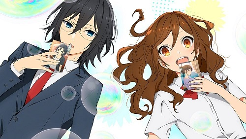
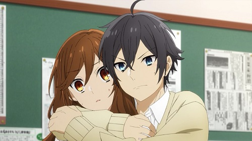

Horimiya: El amor con el que puedes ser tu mismo.
Todos tenemos un lado que no queremos mostrar a los demás y cuando te encuentras con otra persona que pasa por lo mismo tienden a volverse complices.
Hori-san es la chica perfecta: sociable, estudiosa, tranquila mientras que Miyamura es bastante raro, con su mirada siempre fija en su pupitre. Pero Hori-san también puede ser alguien bastante enojona, del mismo modo que Miyamura puede ser más divertido y relajado de lo que se ve a simple vista. Y ambos lados, el bueno y el malo, son lo que más les gusta a uno del otro son lo que los hace cómplices en Horimiya.
Esta historia no solo se limita al amor, sino que su eje secundario trata los complejos humanos, toca varios temas como el bullying, el aislamiento social o la vergüenza adolescente, no solo con los protagonistas sino con todos sus personajes. Puedes disfrutarlo en una sola tarde puesto que cuenta con solo 13 episodios, estoy segura de que disfrutarás de ellos tanto como lo hice yo.